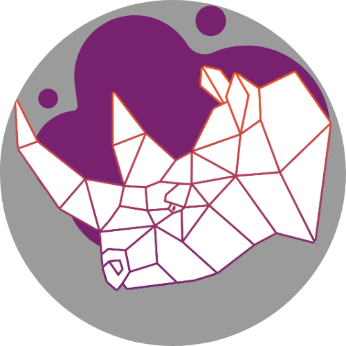
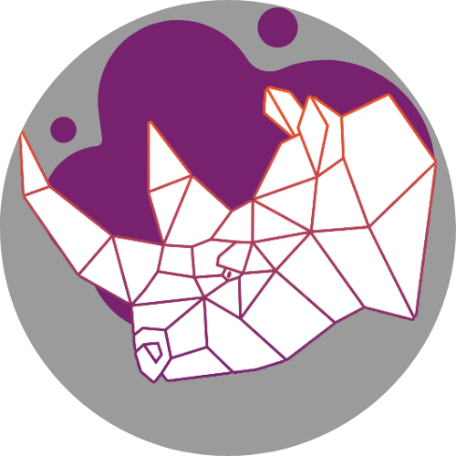

Rolling Rhino Remix is YOUR free Linux operating system
Our set of Brand Guidelines exist so that Rolling Rhino Remix is communicated with the same precision we used to create it.
These guidelines and assets provide everything that builds the Rolling Rhino Remix brand. To help ensure the continued success of Rolling Rhino Remix, please use them as instructed.
• Our logos, wallpapers and assets are licensed under CC BY-SA 4.0. Rolling Rhino Remix itself is licensed under the GNU General Public License v3.0.
Our Logo
There are a handful of varients of the Rolling Rhino Remix logo. Each designed for a different purpose. The logo features a geometric rhinoceros (rhino) coloured in white. The gapes between the shapes that build up the rhino have a gradient effect, slowly shifting from the Ubuntu orange to the Ubuntu purple. We feel that it is integral to stick to the colour pallete as much as possbile, as our distribution provides a rolling release spin of Ubuntu. The logo has a purple splotch behind the rhino, this purple is the same as the Ubuntu purple utilised in the gradient effect.
• You can view our full range of logos below:


 



The logo utilises the Ubuntu colour pallete which can be found here.
Our Wallpapers
The desktop wallpaper is one of the first things a new user will notice about their operating system. This is why we have designed two unique wallpapers to match our branding. The wallpapers will automatically change depending on whether the user is utilising light or dark mode.


The wallpapers also utilise the Ubuntu colour pallete. The reason we have chosen to stick to the Ubuntu colour pallete is so that users still know that they are using Ubuntu, this is an Ubuntu-based distribution with only one major change, that it is a Rolling Release, and as such the Ubuntu colour pallete would be the most appropriate colour pallete to utilise.